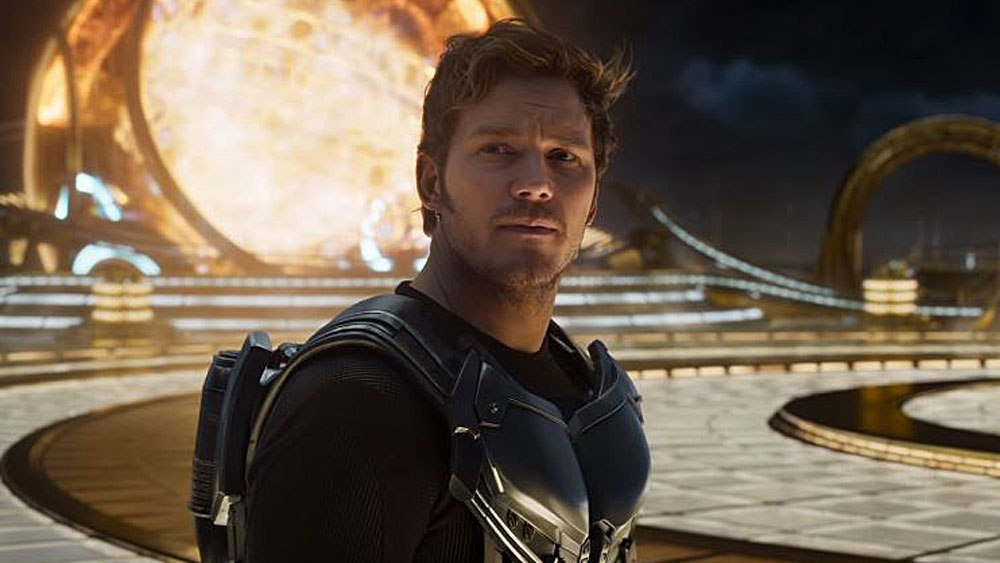

Peter Jason Quill atau yang biasa disebut Peter Quill adalah karakter Marvel yang diciptakan oleh Steve Englehart dan Steve Gan. Karakter yang dijuluki Star Lord ini merupakan pemimpin dari Guardians of the Galaxy yang bertugas menjaga kedamaian antar galaxy. Star Lord sendiri pertama kali muncul pada tahun 1976 pada komik berjudul Marvel Review.
Chris Pratt sebagai Peter Quill / Star-Lord, pemimpin Guardians of the Galaxy yang merupakan setengah manusia dan setengah Celestial, ia diculik dari Bumi saat kecil dan dibesarkan oleh sekelompok alien pencuri dan penyelundup yang disebut Ravagers.
Quill sendiri merupakan orang yang dilahirkan dengan penuh kontroversi. Dalam komiknya diceritakan jika Quill adalah anak dari hasil perselingkuhan, namun versi MCU menunjukan jika ayah Quill bukanlah manusia biasa. Dia adalah sebuah Planet yang hidup bernama EGO. Quill tak mengenal ayahnya dan hidup bersama ibu dan kakeknya. Terdapat perbedaan cerita pada versi komik dan film. Pada versi film, ibunda Quill meninggal kerena sakit saat Quill berusia 14 tahun namun pada versi komik ibu Quill dibunuh oleh seorang alien yang diduga terkait dengan ayah Quill.
Diversi film, Peter Quill diculik oleh pesawat alien dan dibesarkan oleh sekelompok alien yang dipimpin oleh Yondu. sejak saat itu ia menjuluki dirinya sebagai Star Lord. Star Lord hidup sebagai seorang perusuh, pencuri serta tindakan kriminal lainnya hingga dirinya menjadi buronan NOVA (polisi galaxy versi Marvel).
Meskipun Star Lord melakukan tindakan kriminal, dirinya selalu menghindari aksi kekerasan. Keahliannya dalam berkomunikasi sering digunakan untuk menipu korbanya. Sebagai Starl Lord, Peter Quill memiliki sebuah kostum khas. Kostum tersebut dapat memberikan kekuatan dorongan layaknya Iron Man. Selain kostum, Star Lord juga memiliki senjata sejenis meta pistol yang dapat mengubah energi sekitar (tanah, udara, api, air) menjadi peluru yang bisa ditembakkan ke lawannya. Ia juga memiliki pesawat pribadi yang dapat terbang di segala medan termasuk didalam air. Perlengkapan unik lain yang dimiliki Star Lord adalah sebuah helm yang bisa menganalisis data, mengatur kadar oksigen, dan penerjemah universal.
Tindakan Kriminal Star Lord berhenti setelah dirinya bergabung dengan kelompok Guardians of the Galaxy dan menjadi pahlawan dengan menjaga keamanan galaksi.